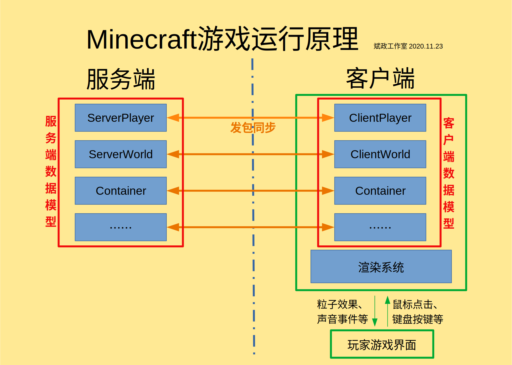

客户端与服务端
客户端与服务端概述
Minecraft的运行分为『客户端』与『服务端』。客户端全称『逻辑客户端』负责界面渲染、将玩家在客户端的操作反馈到服务端等；服务端全称『逻辑服务端』负责数据处理、游戏逻辑等。
在多人游戏时，这就很好理解。远程服务器运行服务端，本地运行客户端。客户端将我们的操作通过网络发包反馈到服务端，服务端将操作处理后返回给客户端。单人游戏也是一样的道理，只不过二者同时存在于你的计算机中，他们位于不同的线程 (服务端位于『Server Thread』，客户端位于『Render Thread』，如果你分析过Minecraft的运行日志，你一定对此不陌生)。
实际上，客户端与服务端的区别仅仅是逻辑上的。下面一张图反映了二者的关系。

看完这张图，你或许会产生疑问。我们刚刚说客户端负责画面渲染，怎么在这张图里，客户端还有ClientPlayer、ClientWorld之类的乱七八糟的东西？其实这些只是服务端对应的数据模型的副本。因为客户端也需要数据模型供玩家操作，然后将被玩家的操作修改后的数据同步到服务端。这两个数据模型有各自独立的Tick和数据，但最终还是以服务端的数据为准。
物理客户端与物理服务端
在客户端与服务端之外，我们还要引入『物理客户端』与『物理服务端』的概念。
注意：以下的内容与上面的内容没有直接联系，不要与上面的内容混淆！
物理客户端，之所以最前面加上了『物理』两个字，就说明这里的客户端与上文的客户端不一样了。它不是逻辑上的客户端，而是实实在在的客户端，也就是我们平时运行的游戏。而物理服务端也是一样的道理，即服务器上运行的服务端。
为什么要引入这两个概念呢？根据我的开发经验，一样有问题的代码，在逻辑服务端上执行的错误表现与在物理服务端上执行的错误表现是不同的。前者可能只是报错，而后者可能直接崩溃，或者出现其他表现。逻辑客户端与逻辑服务端也是一样的道理。如果全部笼统地称作『客户端』或『服务端』，就容易混淆。因此，为了加以区分，我们便引入这两个概念。
例如，在物理服务端是没有与渲染相关的类的，如果在物理服务端中运行涉及渲染的代码，就会导致崩溃。虽然在物理客户端中的逻辑服务端也不能运行，但一般只会报错，而不会导致崩溃。
代码上如何区分他们
区分逻辑客户端与逻辑服务端
在World中有个布尔类型的变量，叫isRemote，这是区分逻辑客户端与逻辑服务端的最常用方法。当目前的世界是ClientWorld时，该字段为true，当目前的世界是ServerWorld时，该字段为false。
代码示例：
if (world.isRemote) {
(要运行的代码)
}
区分物理客户端与物理服务端
在FMLEnvironment类中有一个变量dist，dist里有两个方法，分别为isClient()和isDedicatedServer()。他们的用途这里就不多说了。
代码示例：
if (FMLEnvironment.dist.isClient) {
(要运行的代码)
}
一些注意事项
既然客户端与服务端的职责不同，相关数据模型也不同，那么为了确保你的Mod能够同时兼容物理客户端与物理服务端，请注意以下几点：
- 服务端没有渲染相关的类，因此请不要在服务端调用任何涉及渲染的类。
- 给只能在客户端运行的类与方法加上
@OnlyIn(Dist.CLIENT)注解是一个好习惯。 - 与逻辑相关的代码要用
if (!world.isRemote)(注意world前面的!) 套起来，确保只在服务端运行。与渲染相关的代码也是一样的。